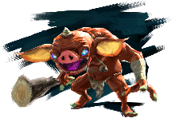

Enemy |
Health |
Description |
Picture |
| Bokoblin | 13-1080 | This common species is a nuisance all over Hyrule. While not very clever, they are are still intelligent enough to hurt you. |  |
| Lizalfos | 50-1296 | These quick-witted, lizard-like monsters can be found all over Hyrule. They lurk underwater or use camoflage. They also never sleep. | |
| Moblin | 56-1620 | This heavyweight species of monster can be found everywhere. They are very strong and can resist bombs. | |
| Lynel | 2000-7500 | These fearsome monsters have lived in Hyrule since ancient times. They possess intelligence, resilience, and strength. Lynels are one of the most dangerous creatures in all the land. | |
| Chuchu | 3-48 | A low level, gel-based monster who's strength varies by size. Bigger ones can split into smaller ones. | |
| Wizzrobe | 150-300 | These spell-casting monsters can be found around Hyrule. Using elemental wands, they can change the weather until you defeat them. | |
| Octorok | 8 | This creature can be found on land and in the water. They will shoot rocks at you, and their aim is very precise. | |
| Keese | 1 | The unpredictable flight pattern of keese can make them difficult to fight. However, they are too weak to last more than one strike. Sometimes they will gather in a pack and attack all at once. | |
| Pebblit | 20 | A young Talus, these creatures are unbeatable unless you throw or drop them. Swords and other weapons don't stand a chance. | |
| Yiga Fighters | 64-600 | All yiga fighters have been dispatched with a single task: To seek out and destroy Link. Some disguise themselves as travelers and attack you when you least expoect it. | |
| Guardian | 4-3000 | While originally created for the purpose of defending Hyrule, these Ganon-possessed robots now attack anyone they come across. | |
| Mini Bosses | |||
| Talus | 300-900 | This enormous monster is camoflaged as a rock formation. Going near one will awake it. It is unbeatable unless you attack the ore sticking out of its head. | |
| Hinox | 600-1000 | The largest monster in Hyrule, Hinoxes live in cleared areas, typically around trees. Some will wear protective guards around their feet that must be broken before attacking them. | |
| Molduga | 1500 | This massive monster swims beneath the desert's sand. It only comes up when it feels movement, it will breach the surface to feast on whatever moves. | |